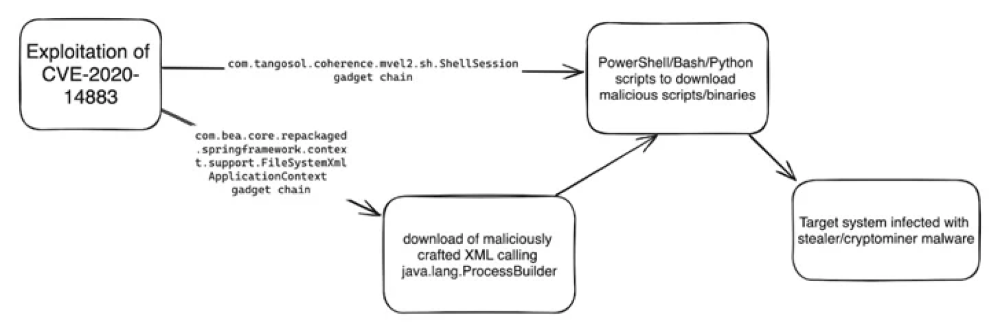

January 10, 2024
The threat actors associated with the 8220 Gang have been observed exploiting a high-severity flaw in Oracle WebLogic Server to propagate their malware. The security shortcoming is CVE-2020-14883 (CVSS score: 7.2), a remote code execution bug that could be exploited by authenticated attackers to take over susceptible servers. "This vulnerability allows remote authenticated attackers to execute code using a gadget chain and is commonly chained with CVE-2020-14882 (an authentication bypass vulnerability also affecting Oracle Weblogic Server) or the use of leaked, stolen, or weak credentials," Imperva said in a report published last week.
The 8220 Gang has a history of leveraging known security flaws to distribute cryptojacking malware. Earlier this May, the group was spotted utilizing another shortcoming in Oracle WebLogic servers (CVE-2017-3506, CVSS score: 7.4) to rope the devices into a crypto mining botnet. Recent attack chains documented by Imperva entail the exploitation of CVE-2020-14883 to specially craft XML files and ultimately run code responsible for deploying stealer and coin mining malware such as Agent Tesla, rhajk, and nasqa.
"The group appears to be opportunistic when selecting their targets, with no clear trend in country or industry," Imperva security researcher Daniel Johnston said. Targets of the campaign include healthcare, telecommunications, and financial services sectors in the U.S., South Africa, Spain, Columbia, and Mexico. "The group relies on simple, publicly available exploits to target well-known vulnerabilities and exploit easy targets to achieve their objectives," Johnston added. "While considered unsophisticated, they are constantly evolving their tactics and techniques to evade detection."